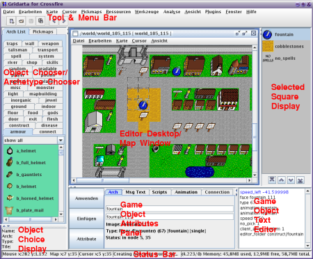
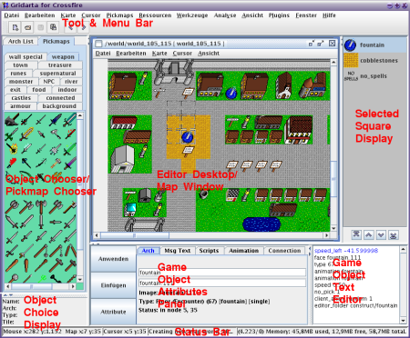

Back
Back
The different frames and their purpose


Menu Bar
A normal menu bar as found in other programs, for actions like load, save, cut,
copy, paste and such.
Tool Bar
A normal tool bar as found in other programs, for some of the available actions.
Object Chooser
Chooses objects for insertion. Consists of Archetype Chooser and Pickmap
Chooser.
Archetype Chooser
This panel contains all available archetypes. You can select from the list and
then eventually insert them into your map.
Pickmap Chooser
Chooses a pickmap or an object from a pickmap for insertion.
Object Choice Display
Displays some basic information about the object currently chosen in the Object
Chooser.
Editor Desktop
The large region that appears to be blank after startup and later holds the
windows of the maps that are being edited.
Map View
The Map View shows the currently open and active map. Here you can select,
insert and delete objects.
Selected Square Display
This panel contains all objects on the cursor map square. Here you can
select/insert/delete single objects, similar to how it works in the map view.
Additionally you can change the stacking order of the objects by pressing the
up/down arrows below the panel.
Game Object Attributes Panel
Shows information about the currently selected Game Object plus allows
manipulation of some aspects of Game Objects. Don't forget to click "Apply" to
apply the new settings.
Game Object Text Editor
This window contains the game object's attributes of the currently selected
object. You should know what you're doing when modifying these. See
Manipulating Objects.
Again, don't forget to hit "Apply".
Status Bar
Shows current memory usage, cursor and selection coordinates and similar status
information.